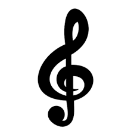

Encontra aqui algumas Partituras para começares a dominar o teu instrumento favorito.

Formação musical
Assim como uma partitura sem música é apenas tinta no papel, a formação musical dá vida às notas, transformando teoria em harmonia sonora.
Aprende esta linda linguagem da musica.
Piano
O piano é uma máquina do tempo que nos transporta para diferentes épocas e lugares. Ao aprender a tocá-lo, viajamos sem sair do lugar,
explorando séculos de música e história.
Flauta
Cada nota soprada na flauta é um passo rumo à harmonia interior e à expressão artística.
Aprende a tocar este instrumento.
Guitarra
Aprender a tocar guitarra é um ato de paixão, perseverança e amor pela música.
Aprende a tocar este instrumento.